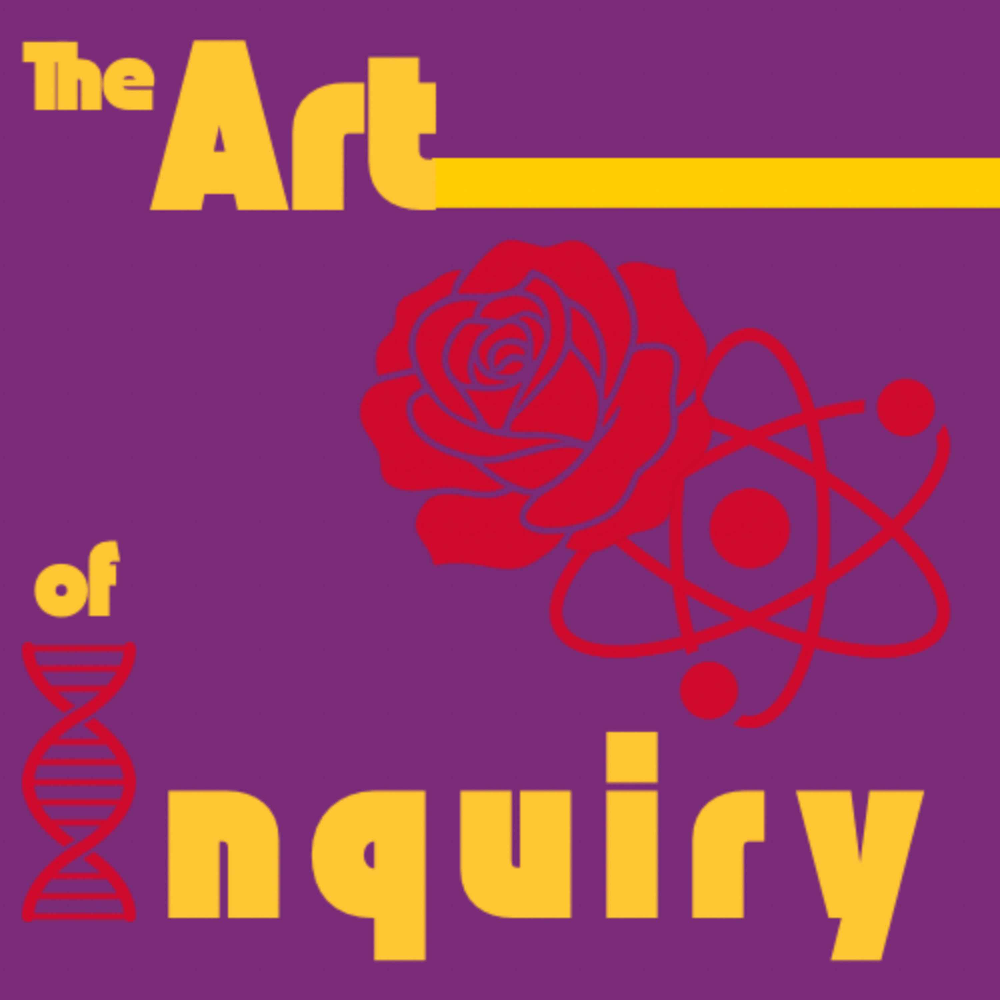

Shining a light on the beauty of STEM through the lens of art and creativity
Listen on Spotify
The Art of Inquiry shines a light on the beauty of STEM by interviewing successful academics and researchers in science. We explore their work not just technically but from a holistic and artistic perspective, highlighting the interdisciplinary efforts that often go unseen.
Our goal is to inspire curiosity and show how creativity and science effortlessly intersect. Our thesis focuses on the hidden face of art in our everyday life and specifically in hard scientific research.
Mechanical Engineer
Brings engineering perspective and curiosity about the intersection of technical precision and creative problem-solving
Bioengineer & Art Lover
Combines biological sciences with artistic appreciation to explore the beauty in scientific discovery
We met during our co-op in San Francisco and bonded over our shared belief that science and art are not separate disciplines but interconnected ways of understanding our world.
September 26, 2024 | 33 minutes
In this episode, we sit down with Paolo Ciuccarelli, a designer and researcher at the forefront of data design. Together, we explore what it means to collaborate across disciplines in this growing field, and how to approach the responsibility of storytelling in shaping public memory.
September 9, 2024 | 4 minutes
Tune in for an introduction to the Art of Inquiry, get to know your hosts, and explore the roles of art and science in your everyday life!
Creating the Art of Inquiry has been a journey of learning and growth. From designing our logo ourselves to mastering the technical aspects of podcast production, every step has been an adventure:
We're filling a gap in science communication by showing that researchers are not just scientists but also artists in their approach to discovery. Through thoughtful conversations, we reveal the creative processes behind groundbreaking research and inspire the next generation to see STEM fields as creative endeavors.
To demonstrate that the boundary between art and science is not a wall but a bridge, and that the most innovative breakthroughs happen when we cross it.